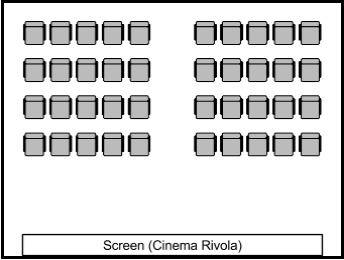

Our quaint cinema has overgone some new renovations, combining our old world charm with the style and technologies of the modern age. We currently have two different cinema rooms, both with their own charm and seating arrangments.
Cinema Maxima
This large cinema is perfect for those into modern technology. On the large screen plays all mainstream and 3D movies. If that's not exciting enough, there are three different types of seating to choose from:
- Normal Seats
- (Full, Concession and Child under 12 pricing options)
- First Class Seats
- (Full and Child pricing options)
- Bean Bag Seats
- Can accommodate 2 adults, 1 adult + 1 child OR 3 children (under 12)
Cinema Rivola
This quaint cinema features one smaller screen and un-renovated, conventional seating. Playing foreign language films, art house films and films near the end of their distribution. All of these films are shown in 2D only. This cinema is perfect to be hired for community or corporate functions.Â
